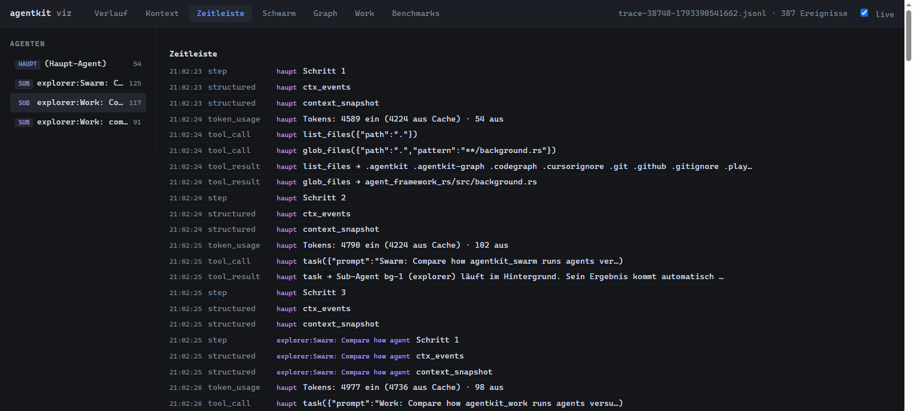

Delegating work to sub-agents, in the foreground and in the background
Suppose you ask an agent to compare two parts of a repository. To answer, it has to read a few dozen files. If the main agent reads all of them itself, every file stays in its conversation and is sent again with each later model request. A sub-agent can do the reading instead and return only its findings.
This article follows one real run of that comparison. It first explains what a sub-agent is and what the main agent receives back. It then shows the new background mode in agentkit 0.32, in which the main agent keeps working while its helpers read. The article assumes you have seen the basic loop of model request, tool call and tool result; Following a task through the agent loop explains it.
1. Handing a subtask to a helper
The main agent, which we will call the orchestrator, delegates through a tool named task. Like any other tool call, the model supplies arguments: a prompt describing the subtask and optionally a subagent_type that selects a role.
{
"prompt": "Summarize how agentkit_work/src starts and retries agent attempts. Cite file paths.",
"subagent_type": "explorer"
}agentkit then builds a separate agent for this request. It has its own conversation, starting with the role's system prompt and the given prompt, and its own tool set. It runs the normal loop until it gives a final answer. That answer becomes the tool result of the orchestrator's task call.
The effect on the orchestrator's conversation is the reason for delegating. The files the helper read, its searches and its intermediate thoughts stay in the helper's conversation and disappear with it. The orchestrator receives a few hundred tokens of findings instead of the file contents. In a measured run documented in the agentkit README, three sub-agents read 61 files while the orchestrator read three.
2. Roles limit what a helper can do
A role is a system prompt combined with a tool subset. agentkit has three built-in roles, plus general with the full coding tool set:
| Role | Purpose | Tools |
|---|---|---|
explorer | Find and summarize relevant code | Read-only: listing, search, file reading, read-only git |
reviewer | Examine code or a diff and report findings | Same read-only set |
tester | Run tests and report pass or fail | Read tools plus run_shell, no file editing |
general | Any subtask | All coding tools |
You can add roles as Markdown files with --agents DIR: the frontmatter holds the name and description, the body becomes the system prompt. Two restrictions apply to every role. A helper never receives the task tool, so delegation is one level deep. And helpers share the orchestrator's workspace; there is no file isolation between them. The same approval rules apply to their shell commands.
3. Several helpers in one response
A model can request several tool calls in a single response. If those include more than one task call, agentkit runs the helpers concurrently on separate threads and waits for all of them. Their events go to the same event bus as the orchestrator's, each tagged with a source label, so the terminal and the trace show which helper did what.
In this mode, the orchestrator still waits. The tool calls of one response finish together before the next model request, and the orchestrator cannot read a file of its own while its helpers are busy. For a comparison like ours, where the orchestrator has its own part of the work, that waiting is avoidable.
4. Continuing while helpers work
agentkit 0.32 adds the parameter run_in_background to task. With true, the tool starts the helper on its own thread and returns at once with an identifier such as bg-1. The orchestrator's next model request happens immediately.
A finished helper puts its result in a mailbox: a queue that belongs to the orchestrator's current run. The orchestrator's loop checks this mailbox at two points:
- At every step boundary. Before the next model request, finished results are added to the conversation as a user message beginning with
[Hintergrund] Sub-Agent bg-N (role) ist fertig. The text is German because agentkit's prompts are German. - When the model ends its turn. Normally, a response without tool calls ends the run. If background helpers are still running, the loop instead blocks until the next result arrives, adds it and asks the model again.
The second point means that waiting needs no separate tool. The model ends its turn when it cannot continue without a result, and the loop keeps the run alive. The model decides which results it depends on; the runtime makes sure none is lost.
This is the same pattern a swarm member uses: a thread that owns an agent and a mailbox for messages. The implementation in background.rs does not reuse the swarm's code, because the agent core must not depend on the swarm crate.
5. A recorded run
The following run used agentkit 0.32 with the model gpt-5.4-mini on Azure OpenAI, against this repository. It recorded a trace with --trace and ran with managed context (--ctx), which the companion article discusses. The task was:
agentkit --ctx .agentkit/ctx --ctx-budget 45000 --trace .agentkit/trace \
"Compare how agentkit_swarm and agentkit_work run agents. Use only file tools.
Start two sub-agents in the background, one per crate. While they run,
read agent_framework_rs/src/background.rs yourself. Then write a comparison
of at most 12 lines."The prompt above is shortened; the full prompt also asked the prompts to start with Swarm: and Work: so the helpers are easy to tell apart in the viewer. A different model, or the same model on another day, may choose different calls.
The trace shows this sequence for the orchestrator, with times measured from its first step:
| Time | Orchestrator | Helpers |
|---|---|---|
| 0–1 s | Lists files and locates background.rs | — |
| 2.4 s | Starts bg-1 (swarm) | bg-1 starts reading |
| 3.5 s | Starts bg-2 (work) | bg-2 starts reading |
| 4.6 s | Reads background.rs itself | both read |
| 5.7 s | Ends its turn without a tool call; the loop waits | both read |
| 22.0 s | Receives bg-1's result and starts bg-3 | bg-1 done |
| 27.1 s | Receives bg-2's result | bg-2 done |
| 35.1 s | Receives bg-3's result | bg-3 done |
| 36.8 s | Writes the comparison | — |
Two details are worth noting. The orchestrator's own reading happened while both helpers were running, which is what the background mode is for. And bg-1 reported that it could not extract the details it was asked for. The orchestrator reacted by starting a third helper, although the prompt had asked for exactly two. The runtime does not limit the number of background helpers; that remained a model decision.

agentkit viz for the same run. After the main agent (haupt) starts bg-1, the helper's steps (explorer:Swarm: …) appear between the main agent's own events. The viewer's labels are German.The orchestrator's conversation ended at about 9,500 input tokens for its last request. The three helpers together made 102 tool calls; the orchestrator made six. Had the orchestrator made the helpers' reads itself, their results would have accumulated in its own conversation.
6. How the run ends
Background work adds cases in which a run could end while a helper is still active. agentkit handles them as follows:
- Step limit. If the model ends its turn in the last allowed step while helpers are open, its interim message is not treated as an answer. The run returns
(max_steps erreicht), the same marker as any run that reached its step limit. - Cancellation, budget or model error. When a run ends without its helpers, agentkit stops them, so they do not continue writing to the shared workspace after the run was reported as finished. The waiting loop checks for cancellation every 100 ms.
- Helper failure. A helper that panics still delivers a result, so the orchestrator does not wait forever.
- Verification. With
--verify, each delivered result resets the requirement to run a check before finishing, because the helper may have changed files after the orchestrator's last check.
Each delivered result also produces a background_result event with the identifier, role and result. The terminal and the TUI print it as a separate line; the editor protocol (ACP) reports it as a completed entry; the trace viewer shows it in the timeline.
7. Costs and limits
Delegation reduces the size of the orchestrator's conversation. It does not reduce the total amount of model usage. Each helper has its own system prompt and tool descriptions, and several helpers produce parallel requests. On a deployment with a tight rate limit, that can lead to more throttling.
A helper's result is a summary written by a model. If it is wrong or incomplete, the orchestrator has no other copy of what the helper read. In our run, the orchestrator noticed bg-1's failure only because the helper said so. For important claims, the orchestrator or a reviewer helper can still read the cited files.
Background helpers fit tasks where the orchestrator has independent work. If it can do nothing until a result arrives, starting several helpers in one response gives the same parallelism with fewer moving parts.
8. Summary
A sub-agent is a separate agent run whose final answer becomes a tool result. Delegating reading keeps file contents out of the orchestrator's conversation. Several task calls in one response run in parallel, and with run_in_background the orchestrator continues while helpers work and collects their results from a mailbox at step boundaries or when it ends its turn.
To try it, ask a question that needs reading in several places and record a trace with --trace; Get started covers the setup. The capability guide lists the options, and roles.rs contains the task tool and the built-in roles.